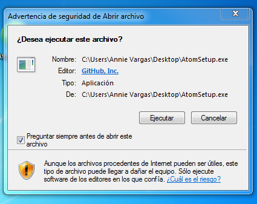
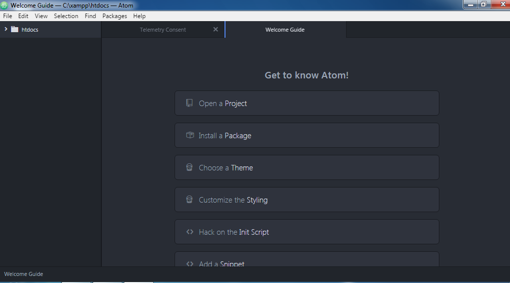
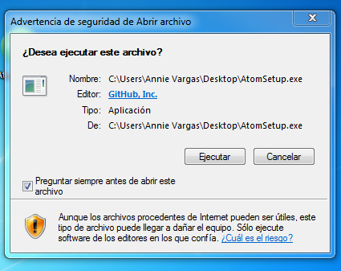
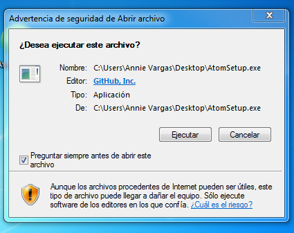
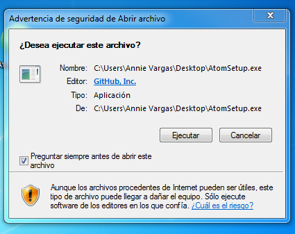
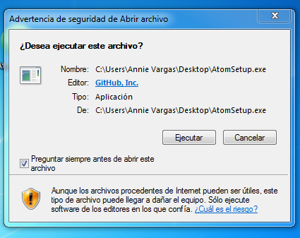
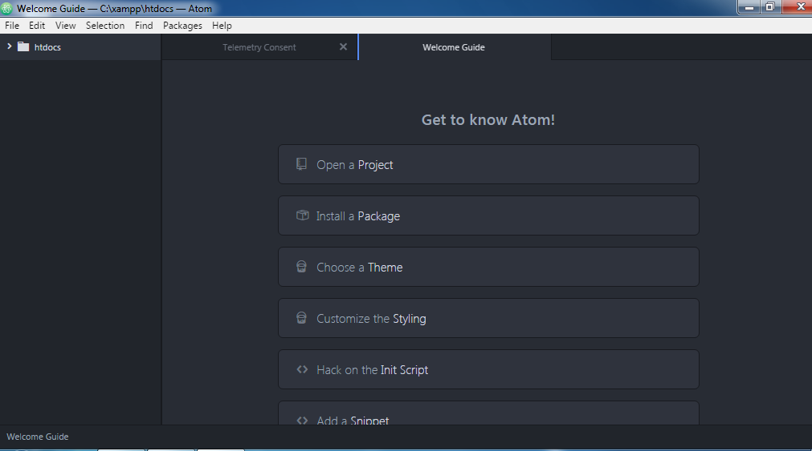
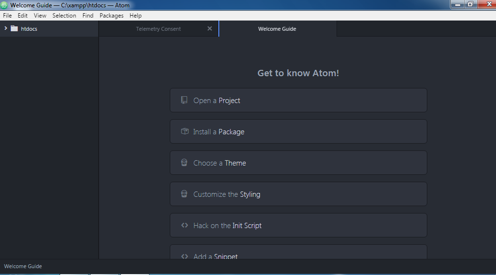

Antes que otra cosa, debemos descargar el ejecutable desde la página oficial para poder instalarlo
1. Ejecutamos el archivo.

2. Esperamos que termine la instalación. Al finalizar nos abrirá en seguida el editor de texto ATOM.

  
   
